生成对抗网络（GAN）是一个十分有效的深度学习模型，由此衍生了Cycle GAN《Unpaired Image-to-Image Translation》。
先简单介绍一下GAN。
GAN——Generative Adversarial Networks
网络中有生成器G（generator）和鉴别器（Discriminator）。
有两个数据域分别为X,Y。G 负责把X域中的数据拿过来拼命地模仿成真实数据并把它们藏在真实数据中，而 D 就拼命地要把伪造数据和真实数据分开。经过二者的博弈以后，G 的伪造技术越来越厉害，D 的鉴别技术也越来越厉害。直到 D 再也分不出数据是真实的还是 G 生成的数据的时候，这个对抗的过程达到一个动态的平衡。
传统的GAN是单向的：
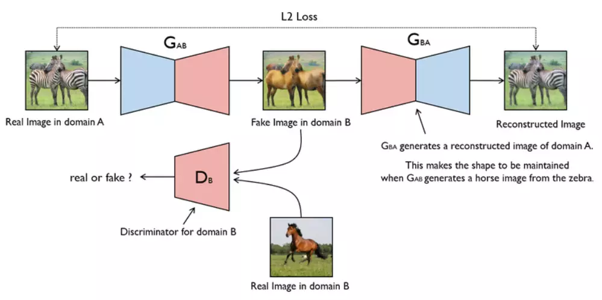
GAN损失
训练这个单向GAN需要两个loss：生成器的重建Loss和判别器的判别Loss。
1.重建Loss：希望生成的图片Gba(Gab(a))与原图a尽可能的相似。
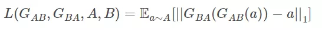
2.判别Loss：生成的假图片和原始真图片都会输入到判别器中。公式为0,1二分类的损失。
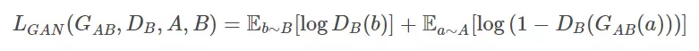
CycleGAN
CycleGAN本质上是两个镜像对称的GAN，构成了一个环形网络。
两个GAN共享两个生成器，并各自带一个判别器，即共有两个判别器和两个生成器。一个单向GAN两个loss，两个即共四个loss。
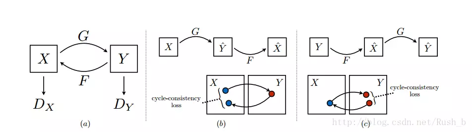
论文里最终使用均方误差损失表示：
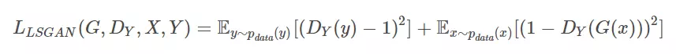
CycleGAN的网络架构如图所示：
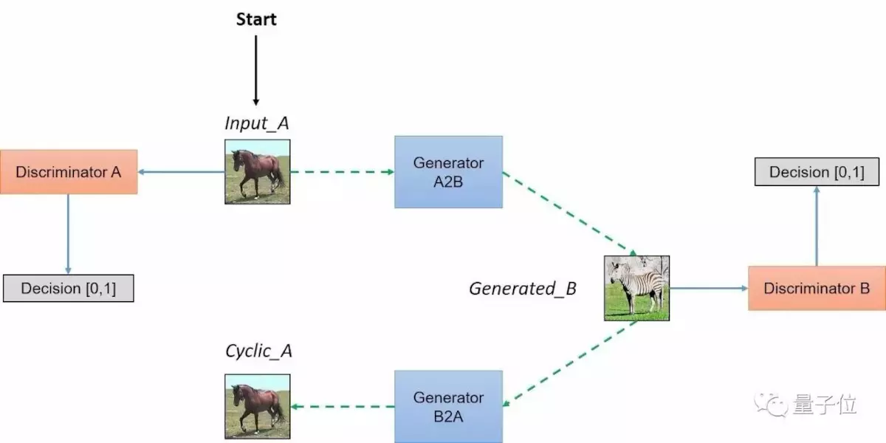
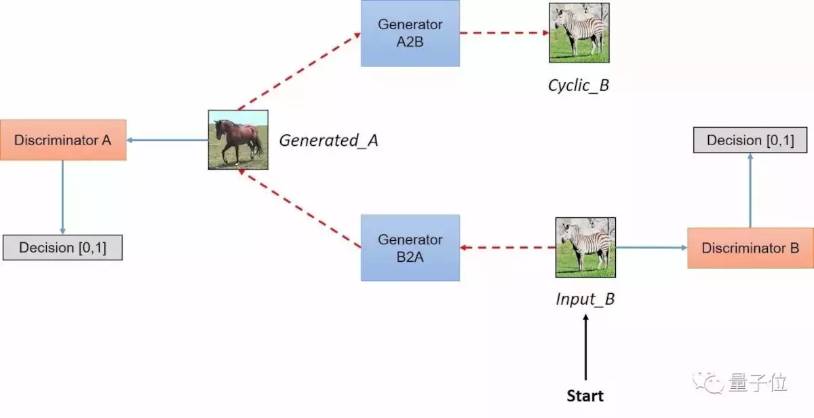
可以实现无配对的两个图片集的训练是CycleGAN与Pixel2Pixel相比的一个典型优点。但是我们仍然需要通过训练创建这个映射来确保输入图像和生成图像间存在有意义的关联，即输入输出共享一些特征。
简而言之，该模型通过从域DA获取输入图像，该输入图像被传递到第一个生成器GeneratorA→B，其任务是将来自域DA的给定图像转换到目标域DB中的图像。然后这个新生成的图像被传递到另一个生成器GeneratorB→A，其任务是在原始域DA转换回图像CyclicA，这里可与自动编码器作对比。这个输出图像必须与原始输入图像相似，用来定义非配对数据集中原来不存在的有意义映射。
生成器
生成器由编码器、转换器和解码器构成。
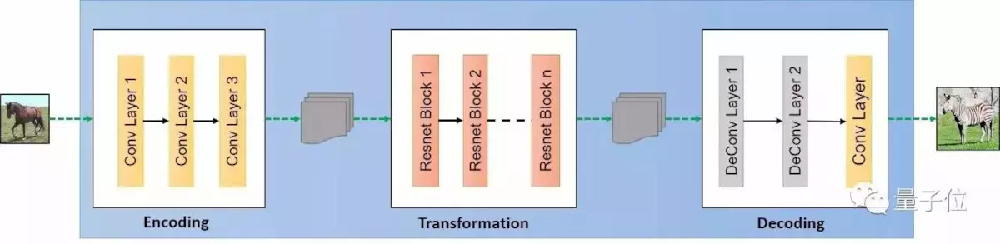
- 编码：第一步利用卷积神经网络从输入图象中提取特征。将图像压缩成256个64*64的特征向量。
- 转换：通过组合图像的不相近特征，将图像在DA域中的特征向量转换为DB域中的特征向量。作者使用了6层Reset模块，每个Reset模块是一个由两个卷积层构成的神经网络层，能够达到在转换时同时保留原始图像特征的目标。
- 解码：利用反卷积层（decovolution）完成从特征向量中还原出低级特征的工作，最后得到生成图像。
鉴别器
鉴别器将一张图像作为输入，并尝试预测其为原始图像或是生成器的输出图像。
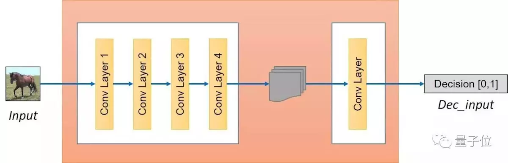
鉴别器本身属于卷积网络，需要从图像中提取特征，再通过添加产生一维输出的卷积层来确定提取的特征是否属于特定类别。
man2woman实验
分别有大约2万张男人与女人的脸作为输入的训练集。
TensorFlow上CycleGAN的实现代码：
https://github.com/vanhuyz/CycleGAN-TensorFlow.git
工具：pycharm+python3.6+TensorFlow
数据集
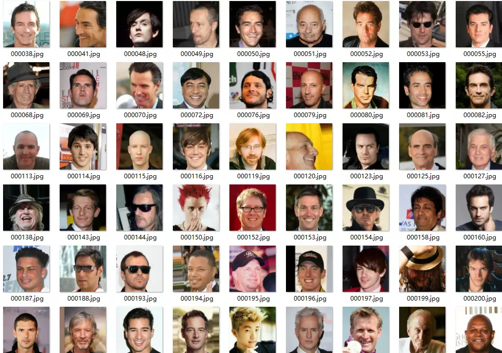
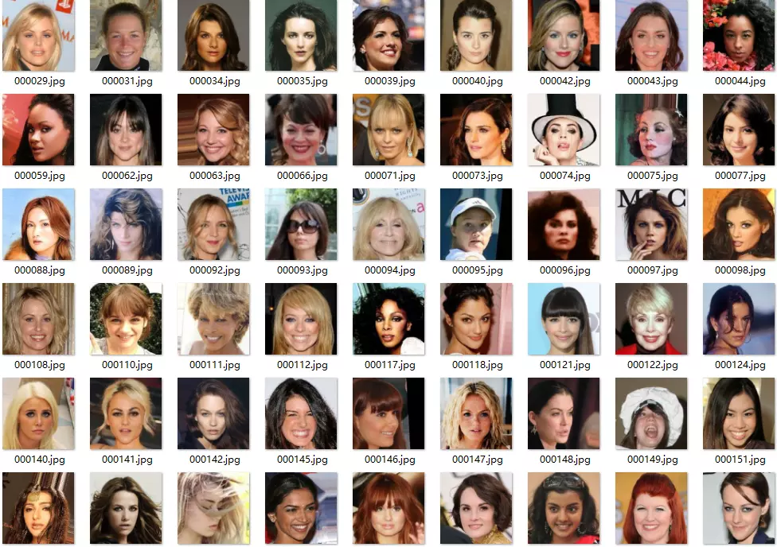
将图片转换为tfrecords格式
项目中提供了build_data.py脚本，修改训练集的路径，运行即可。
训练
导出模型
对单张图片进行转换
将data/test.jpg替换为对应的输入图片地址
训练时踩了比较多坑。由于急于看结果用了比较高的学习率。大概迭代五万次的时候可以有一点能看的结果，10万次时多数还可以接受。但是仍然有许多问题，比如戴眼镜，脸上亮度不均匀，角度奇异等都可能引起生成的图像中噪声较大的问题。
转换的特征通常为面部五官特征以及肤色亮度等，不包括发型，因此男女转化之后显得比较诡异。。
比如
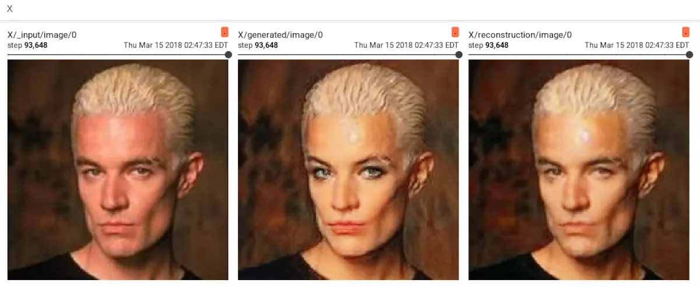
未完待续。。